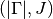
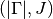
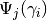
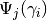
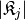

LinearCombinationOfHAWPs¶
About the LinearCombinationOfHAWPs class¶
The WaveBlocks Project
@author: R. Bourquin @copyright: Copyright (C) 2010, 2011, 2012, 2013, 2014, 2015, 2016 R. Bourquin @license: Modified BSD License
Inheritance diagram¶

Class documentation¶
-
class
WaveBlocksND.LinearCombinationOfHAWPs(dimension, number_components, eps, number_packets=0)[source]¶ This class represents linear combinations of compatible Hagedorn wavepackets.
-
__init__(dimension, number_components, eps, number_packets=0)[source]¶ Initialize a new linear combination of Hagedorn wavepackets. This object represents
 .
All
.
All  wavepackets
wavepackets  have the same number
have the same number  components and are defined in the
components and are defined in the  dimensional space.
dimensional space.Parameters: - dimension – The space dimension the packets have.
- ncomponents – The number of components the packets have.
Returns: An instance of
LinearCombinationOfHAWPs.- dimension – The space dimension
-
add_wavepacket(packet, coefficient=1.0)[source]¶ Add a new wavepacket to the linear combination.
Parameters: - packet (A
HagedornWavepacketinstance.) – The new Hagedorn wavepacket to add. - coefficient – The corresponding coefficient
 , default is 1.0.
, default is 1.0.
- packet (A
-
add_wavepackets(packetlist, coefficients=None)[source]¶ Add a list of new wavepackets to the linear combination.
Parameters: - packetlist (A list of
HagedornWavepacketinstances.) – A list of new Hagedorn wavepackets .
. - coefficients – The corresponding coefficient vector
 , default
is a vector of all 1.0.
, default
is a vector of all 1.0.
- packetlist (A list of
-
clone()¶ Raise: NotImplementedErrorAbstract interface.
-
evaluate_at(grid, packetindex=None, prefactor=False)[source]¶ Evaluate the linear copmbination
 of Hagedorn wavepackets at the given nodes
of Hagedorn wavepackets at the given nodes  .
.Parameters: - grid (A class having a
get_nodes(...)method.) – The grid containing the nodes .
containing the nodes . - packetindex – The index
 of a single packet to evaluate.
(Defaults to
of a single packet to evaluate.
(Defaults to Nonefor evaluating all wavepackets.) - prefactor (Boolean, default is
False.) – Whether to include a factor of .
.
Returns: A list of arrays or a single array containing the values of the
at the nodes .- grid (A class having a
-
evaluate_basis_at(grid, prefactor=False)[source]¶ Evaluate all the individual Hagedorn wavepackets
of
at the given nodes .Parameters: - grid (A class having a
get_nodes(...)method.) – The grid containing the nodes . - prefactor (Boolean, default is
False.) – Whether to include a factor of.
Returns: A two-dimensional ndarray
 of shape  where
the entry
of shape  where
the entry ![H[i, j]](../_images/math/9b3972c91e034764adc9dea1bc28bf292365cc30.png) is the value of .
is the value of .- grid (A class having a
-
get_basis_shapes(packetindex=None)[source]¶ Retrieve the basis shapes
 for each packet .
for each packet .Parameters: component (int) – The component  whose basis shape we request. (Default is
whose basis shape we request. (Default is
Nonewhich means to return the basis shapes for all components.Returns: The basis shape for an individual component or a list with all shapes.
-
get_basis_shapes_hashes(packetindex=None)[source]¶ Retrieve the hashes of all basis shapes
for each packet .Parameters: component (int) – The component whose basis shape we request. (Default is
Nonewhich means to return the basis shapes for all components.Returns: The basis shape for an individual component or a list with all shapes.
-
get_basis_sizes(packetindex=None)[source]¶ Retrieve the basis sizes  for each packet
.Parameters: component (int) – The component whose basis shape we request. (Default is
Nonewhich means to return the basis shapes for all components.Returns: The basis shape for an individual component or a list with all shapes.
-
get_coefficient(packetindex)[source]¶ Get the coefficient
of the wavepacket .Parameters: packetindex – The index  of the coefficient to retrieve.
of the coefficient to retrieve.Returns: The coefficient .
-
get_coefficients()[source]¶ Get the vector with all coefficients
of all wavepackets .Returns: The vector of all coefficients . The vector is of
shape  .
.Type: An ndarray
-
get_description()[source]¶ Return a description of this linear combination object. A description is a
dictcontaining all key-value pairs necessary to reconstruct the current instance. A description never contains any data.
-
get_dimension()¶ Returns: The space dimension of all the wavepackets .
-
get_eps()[source]¶ Retrieve the semi-classical scaling parameter
 of the wavepacket.
of the wavepacket.Returns: The value of .
-
get_number_components()¶ Returns: The number of components all the wavepackets have.
-
get_number_packets()¶ Returns: The number of wavepackets in the linear combination .
-
get_wavepacket(packetindex)[source]¶ Get the wavepacket
from the linear combination.Parameters: index – The index of the packet to retrieve.Returns: The wavepacket .Type: A HagedornWavepacketinstance.
-
get_wavepacket_coefficient(packetindex, index)[source]¶ Retrieve a single coefficient
 of the specified component
of the specified component  of
of  .
.Parameters: - component – The index of the component we want to update.
- index (A tuple of integers.) – The multi-index
 of the coefficient we want to update.
of the coefficient we want to update.
Returns: A single complex number.
Raise: ValueErrorFor invalid indices or .- component – The index
-
get_wavepacket_coefficients(packetindex=None)[source]¶ Retrieve a single coefficient
of the specified component
of .Parameters: - component – The index of the component we want to update.
- index (A tuple of integers.) – The multi-index of the coefficient we want to update.
Returns: A single complex number.
Raise: ValueErrorFor invalid indices or .- component – The index
-
get_wavepacket_parameters(packetindex=None, key=('q', 'p', 'Q', 'P', 'S'))[source]¶ Get the Hagedorn parameter set
 of the wavepacket .
of the wavepacket .Parameters: packetindex – The index of the packet whose parameter
set  we want.
we want.Returns: The Hagedorn parameter set  in this order.
in this order.
-
get_wavepackets()[source]¶ Get all the wavepackets
from the linear combination  .
.Warning
This method potentially generates a large number of wavepacket instances.
Returns: A list of HagedornWavepacketinstances.
-
remove_wavepacket(packetindex)[source]¶ Remove a wavepacket
from the linear combination.Parameters: packetindex – The index of the packet to remove.
-
set_coefficient(packetindex, coefficient)[source]¶ Set the coefficient
of the wavepacket .Parameters: - packetindex – The index of the coefficient to retrieve.
- coefficient – The coefficient .
- packetindex – The index
-
set_coefficients(coefficients)[source]¶ Update all the coefficients
of .Parameters: coefficients (An ndarray) – The vector.
-
set_wavepacket_coefficient(packetindex, index, value)[source]¶ Set a single coefficient
of the specified component
of .Parameters: - component – The index of the component we want to update.
- index (A tuple of integers.) – The multi-index of the coefficient we want to update.
- value – The new value of the coefficient .
Raise: ValueErrorFor invalid indices or .- component – The index
-
set_wavepacket_coefficients(coefficients, basisshapes=None, packetindex=None)[source]¶ Retrieve a single coefficient
of the specified component
of .Warning: make sure the coefficients and basis shapes stay in sync!
Parameters: - component – The index of the component we want to update.
- index (A tuple of integers.) – The multi-index of the coefficient we want to update.
Returns: A single complex number.
Raise: ValueErrorFor invalid indices or .- component – The index
-
set_wavepacket_parameters(Pilist, packetindex=None, key=('q', 'p', 'Q', 'P', 'S'))[source]¶ Set the Hagedorn parameters
of the wavepacket .Parameters: Pilist – The Hagedorn parameter set in this order.
-
set_wavepackets(packetlist)¶ Raise: NotImplementedErrorAbstract interface.
-
slim_recursion(grid, packetindex, prefactor=False)[source]¶ Evaluate the Hagedorn wavepacket
at the given nodes .
This routine is a slim version compared to the full basis evaluation. At every moment
we store only the data we really need to compute the next step until we hit the highest
order basis functions.Parameters: - grid (A class having a
get_nodes(...)method.) – The grid containing the nodes . - component – The index of a single component to evaluate.
- prefactor (Boolean, default is
False.) – Whether to include a factor of .
.
Returns: A list of arrays or a single array containing the values of the
at the nodes .Note that this function does not include the global phase
 .
.- grid (A class having a
-